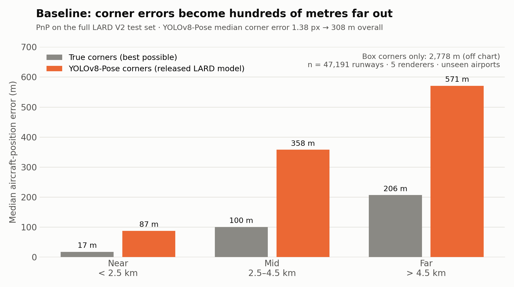
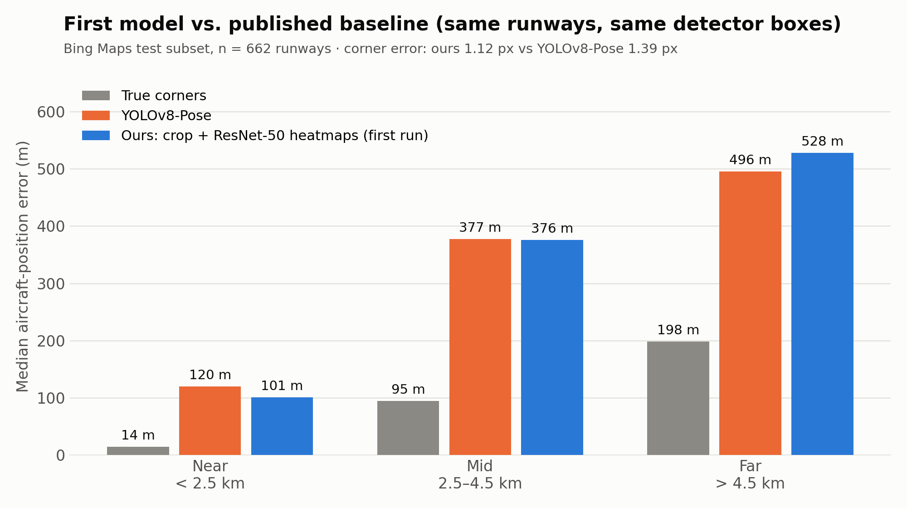

Runway corners to aircraft position
From one forward camera image during a landing approach, find the runway's four corners precisely and compute where the aircraft is: distance to the runway, left/right offset and glide angle. No ILS or GPS needed.
Precision approach guidance still depends on ground equipment
ILS is missing
Instrument Landing Systems need costly ground antennas. Many regional and smaller airfields have none.
GPS can be jammed
GPS jamming and spoofing near conflict zones have grown sharply since 2023.
A camera works anywhere
It needs only the runway's surveyed corners, so it gives an independent cross-check at any runway.
During my American Airlines internship this summer, I learned that pilots sometimes face these issues at smaller airports and in smaller, less-equipped aircraft. A vision-based aid could help most there.
Why accuracy matters: on final approach an airliner covers about 72 m per second.
Detection is solved; precise pose is not
| Work | What it does | Limitation |
|---|---|---|
| LARD 2.0 (ERTS 2026) | Released the dataset; runway bounding boxes with YOLOv8/v11, mAP50 ≈ 0.97 | Boxes only. Corners and pose left as future work |
| YOLO-RWY (Drones 2024) | Improved runway box detector | Boxes only; AP falls from 0.76 to 0.41 on hard real images |
| Ferreira et al. (WACV 2025) | Tracks the runway, YOLOv8-pose corners, then PnP | Old single-runway dataset; pose tested on 2 runways; 460–960 m distance error |
| Valentin et al. (DASC 2025) | Corner keypoints with calibrated uncertainty | Assumes a perfect crop; no detector in the loop; one renderer |
| Theau & Ducoffe (arXiv 2026) | YOLOv8-Pose + PnP on LARD V2, used to test robustness to rotations | Model is a test subject, not improved; one overall number (~201 m) |
| This project | Benchmark and improve corner-based pose on LARD V2 | Full-test-set baseline, crop + heatmap model, CNN vs ViT, multi-runway pose |
Gap: every method uses the four corners of a single runway, nobody reports how corner accuracy turns into position error across distance, and nobody compares CNN and Transformer backbones for this task.
Detect, zoom in, find corners, solve the geometry
Detect
The released LARD YOLO detector finds the runway box.
pretrained · L6Crop
Cut the box with a margin and resize to 256×256, so a 16 px runway fills the input.
resampling · L2Corner network
ResNet-50 + upsampling head gives 4 heatmaps; soft-argmax reads each corner with sub-pixel precision.
what we train · L6Pose (PnP)
Known 3D corners + detected pixels → camera position, distance and angles. IPPE solver plus our physical constraints.
geometry · no learning
Training: loss = MSE on heatmaps + L1 on corner coordinates, gradient descent on batches of 64×256×256×3 crops. Camera: 60° field of view, focal length ≈ 887 px.
How the model works on a real test image
Better corners than the baseline; positions tied, until we use both runways
Released YOLOv8-Pose on the full test set (47,191 runways, unseen airports)
Our corner error vs 1.39 px for YOLOv8-Pose on the same 662 runways (19% better, significant)
Median position error, one runway vs both runways jointly (59 images)


New: using every visible runway at once
At multi-runway airports a second runway is often hundreds of metres away. Solving one camera pose from all eight corners pins down distance far better than four corners of one runway. Same trained model, no retraining. White = true corners, blue = our predictions.
Across all 59 test images with two labelled runways: median 387 m with the target runway alone, 52 m jointly (95% CI of the improvement −472 to −243 m); joint is better on 92% of images. Small sample, so this is a first indication.
About half done; three weeks left
Current challenges
- Better corner accuracy did not yet give better single-runway position. Next: train with a loss on position error and add edge keypoints.
- Far runways (over 4.5 km) stay near 500 m error; even perfect corners give about 200 m there.
- Data issues: two renderers' files lack aircraft poses (filled from the shared scenarios), and download rate limits left the test subset at 717 of 1,200 images.
- Compute: about 5.5 minutes per epoch on a laptop GPU; work started a week behind plan.